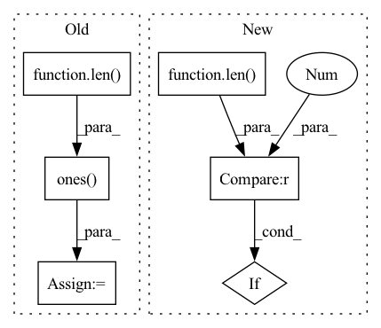

Pattern ID :11554
Before Change
output.append(speaker_embedding)
if return_all_spk_embedding:
random_idx = torch.multinomial(torch.ones(len( self.all_spk_idx) ) , 100, replacement=False).long() // 100 for experimentally to avoid OOM error
all_speaker_embedding = self.embed_sources(self.all_spk_idx[random_idx]) // (n_training_sources, latent_dim)
output.append(all_speaker_embedding)
After Change
all_spk_embedding = self.embed_sources(self.all_spk_idx) // (n_training_sources, latent_dim)
output.append(all_spk_embedding)
if len(output) == 1 :
return output[0]
return tuple(output)In pattern: SUPERPATTERN
Frequency: 3
Non-data size: 6
Instances Fragment ID: 39233120
Project Name: tky823/dnn-based_source_separation
Commit Name: bceeacb692d2f21773f3f8ad7921d5ff890a1403
Time: 2021-11-05
Author: delta9guitar97@gmail.com
File Name: src/models/wavesplit.py
M Class Name: WaveSplit
N Class Name: WaveSplit
M Method Name: forward(9)
N Method Name: forward(9)
M Parent Class: WaveSplitBase
N Parent Class: WaveSplitBase
M File Name: src/models/wavesplit.py
N File Name: src/models/wavesplit.py
M Start Line: 101
M End Line: 116
N Start Line: 159
N End Line: 185
Before Change
// point_features_list.append(pooled_features.view(batch_size, num_keypoints, -1))
point_features_list.append(pooled_features)
if self.model_cfg["add_ego_mask_feature"]:
ego_mask = torch.ones( (len( new_xyz) , 1), device=point_features_list[0].device)
ego_mask[new_xyz_batch_cnt[0]:] = 0
point_features_list.append(ego_mask)
point_features = torch.cat(point_features_list, dim=1)After Change
boxes = torch.zeros((len(dets_list), max_len, 7), dtype=dets_list[0].dtype,
device=dets_list[0].device)
for i, dets in enumerate(dets_list):
if len(dets)==0 :
continue
cur_dets = dets.clone()
if self.model_cfg["enlarge_selection_boxes"]: Fragment ID: 39233118
Project Name: derrickxunu/opencood
Commit Name: c7ecf237666697c93ad84b5d271c16e133ac8ccb
Time: 2022-04-01
Author: yunshuang.yuan@ikg.uni-hannover.de
File Name: opencood/models/sub_modules/vsa.py
M Class Name: VoxelSetAbstraction
N Class Name: VoxelSetAbstraction
M Method Name: forward(2)
N Method Name: forward(2)
M Parent Class: nn.Module
N Parent Class: nn.Module
M File Name: opencood/models/sub_modules/vsa.py
N File Name: opencood/models/sub_modules/vsa.py
M Start Line: 217
M End Line: 289
N Start Line: 196
N End Line: 293
Before Change
if target is None:
target = self.generate_target(_input, idx=target_idx)
elif isinstance(target, int):
target = target * torch.ones(len( _input) , dtype=torch.long, device=_input.device)
def _loss_fn(_X: torch.Tensor, **kwargs):
t = target
if len(_X) != len(target) and len(target) == 1:After Change
if total >= 100:
break
_input, _label = self.model.remove_misclassify(data)
if len(_label) == 0 :
continue
adv_input, _iter = self.craft_example(_input)
Fragment ID: 39233119
Project Name: ain-soph/trojanzoo
Commit Name: 5afae72db24844f2ecd29293bee298401d857ba4
Time: 2020-07-01
Author: ain-soph@live.com
File Name: trojanzoo/attack/adv/pgd.py
M Class Name: PGD
N Class Name: PGD
M Method Name: attack(1)
N Method Name: attack(5)
M Parent Class: PGD_Optimizer,Attack
N Parent Class: PGD_Optimizer,Attack
M File Name: trojanzoo/attack/adv/pgd.py
N File Name: trojanzoo/attack/adv/pgd.py
M Start Line: 28
M End Line: 47
N Start Line: 28
N End Line: 53